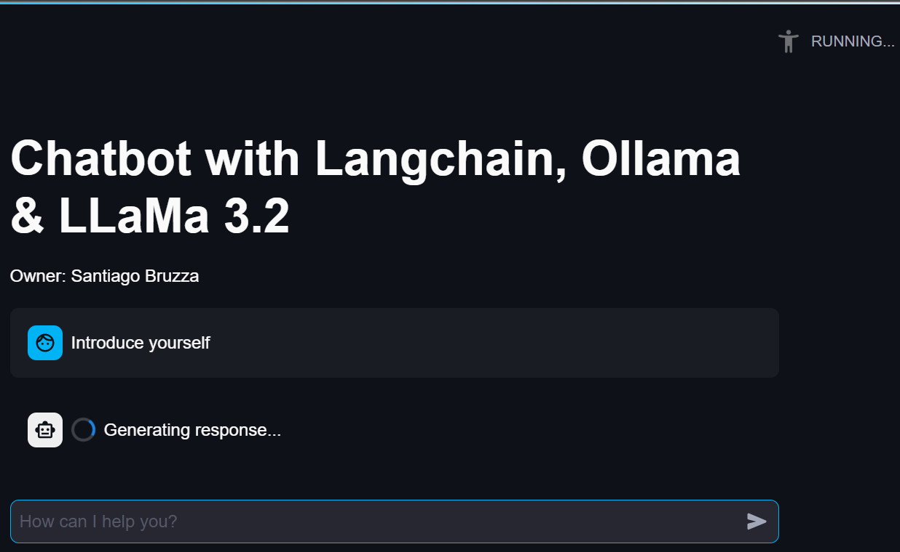
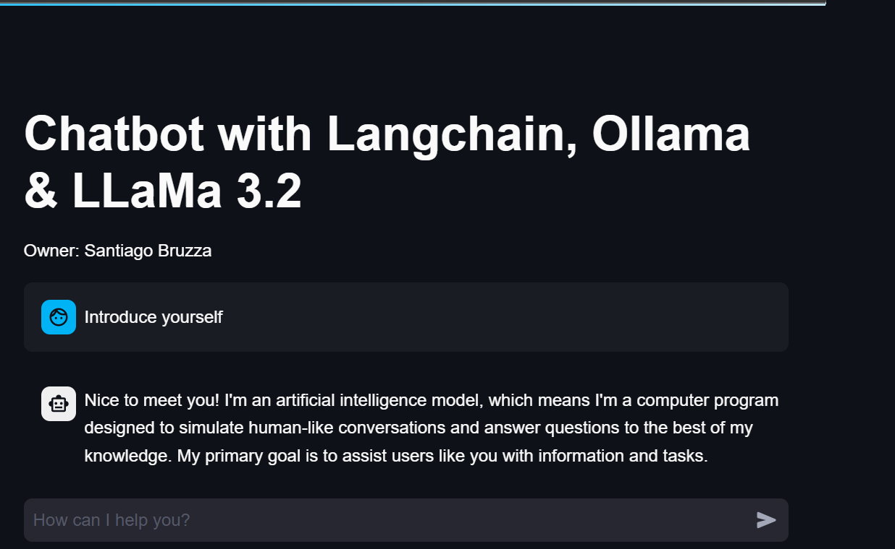

Internal Chatbot


1. Problem Definition / Objective
The chatbot's goal was to streamline information searches across the hundreds of tables a company may have. It allows users to ask where specific information is located, and the chatbot responds with the name of the relevant table.
2. Data Available
Data Catalog
| table_name | table_description |
|---|---|
| table_name_1 | table_description_1 |
| table_name_2 | table_description_2 |
| table_name_3 | table_description_3 |
3. Solution Development
- Chatbot development: I developed a private chatbot using LangChain, Ollama, and LLaMA 3.2 as the LLM and deploying the web app with Streamlit. I implemented RAG via HuggingFace and stored information in a FAISS vector index for efficient retrieval.
- Chatbot deployment: The chatbot runs in a virtual machine (VM) with 128GB of RAM and 1TB of storage memory. The users access it via URL using their browser.
4. Tools and Technologies
- Python
- SQL
- Ollama
- LLaMa
- Langchain
- Streamlit
- HuggingFace
- RAG
5. Next Steps
- Improve RAG implementation to incorporate more company data.
- Optimize model parameters to provide more accurate responses in less time.
- Evaluate different LLMs
- Improve the UI and evaluate other computationally more efficient deployment methods.